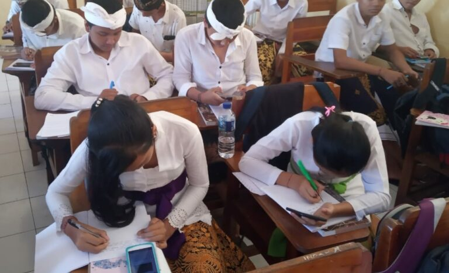

Hello there wave

Portal afifjusuf.id adalah layanan e-learning yang diperuntukkan untuk Sekolah dari jenjang SD, SMP,
SMA/SMK di Provinsi Bali dalam mengembangkan layanan pembelajaran digital secara mandiri dan
terintegrasi. Portal ini merupakan buah kerjasama antara JKS Bali dengan MGMP TIK SMA dan MGMP TKI
SMK Provinsi Bali
Portal e-learning afifjusuf.id menggabungkan teknologi LMS Moodle dan teleconference Big Blue Button
sehingga selain guru menyajikan bahan belajar online berbasis teks, gambar dan video Guru juga dapat
melakukan pembelajaran dengan video conference.
Tujuannya
Memberikan layanan e-learning mandiri berbasis Open Source dan free kepada Sekolah tingkat SD, SMP,
SMK dan SMA di Lingkungan Disdikpora Provinsi Bali.
Fasilitas
Fasilitas yang diberikan untuk sekolah dari afifjusuf.id Layanan e-learning mandiri dan terintegrasi
- VPS (Virtual Private Sever) dengan OS Server Linux
- Video Conference
- Layanan Helpdesk dan Teknis
Cara Mendaftar
Portal afifjusuf.id membuka pendaftaran penggunaan layanan e-learning kepada sekolah dari tingkat SD,
SMP, SMA dan SMK di Lingkungan Pemerintah Provinsi Bali dengan syarat seperti berikut.
- Mengisi form pendaftaran: https://s.id/formmelajahdotid
- Membuat surat permohonan subdomain dan layanan server vps e-learning kepada pengelola
afifjusuf.id
Layanan ini gratis dan diutamakan bagi sekolah sekolah yang belum memiliki server, namun berkomitmen
dalam melakukan pengembangan Budaya IT di sekolah
40 Subdomain Terdaftar
Berproses selama 1 minggu Tim Portal Pembelajaran Online afifjusuf.id rilis 40 subdomain dan lengkap
aplikasi elearning mandiri untuk sekolah dari tingkat SD, SMP, SMA, SMK dan 1 subdomain dan aplikasi
elearning untuk MGMP, Lembaga Pelatihan yang diberi nama pasraman.afifjusuf.id Atas dasar semangat
kebersamaan dari Tim diharapkan afifjusuf.id bisa memberikan warna baru dalam layanan E-learning
terintegrasi pada sekolah di Bali. Karena portal afifjusuf.id khusus dibuat untuk Lembaga Pendidikan
Formal dan Nonformal di Bali dengan semangat belajar, bekerja, berbagi untuk Bali. Daftar sekolah
yang sudah up pada tahap pertama ini adalah:
- https://sman1tabanan.afifjusuf.id
- https://sdn2legian.afifjusuf.id
- https://sdn4tamblang.afifjusuf.id
- https://sdn6pendem.afifjusuf.id
- https://sdno1darmasaba.afifjusuf.id
- https://sildha.afifjusuf.id
- https://smadwijendrabualu.afifjusuf.id
- https://sman1bangli.afifjusuf.id
- https://sman1banjarangkan.afifjusuf.id
- https://sman1petang.afifjusuf.id
- https://sman1selat.afifjusuf.id
- https://sman1tampaksiring.afifjusuf.id
- https://sman1tbn.afifjusuf.id
- https://sman2dps.afifjusuf.id
- https://sman2kuta.afifjusuf.id
- https://smanegeri2banjar.afifjusuf.id
- https://smkdwijendra.afifjusuf.id
- https://smkganeshaubud.afifjusuf.id
- https://smkn1sawan.afifjusuf.id
- https://smkn1sksd.afifjusuf.id
- https://smkn2tegallalang.afifjusuf.id
- https://smkn3tabanan.afifjusuf.id
- https://smkpariwisatabudaya.afifjusuf.id
- https://smkpgri1badung.afifjusuf.id
- https://smkpgripayangan.afifjusuf.id
- https://smkpkertayasa.afifjusuf.id
- https://smkpkertayasa.afifjusuf.id
- https://Smks2dps.afifjusuf.id
- https://smktibaliglobalkarangasem.afifjusuf.id
- https://smpn1kintamani.afifjusuf.id
- https://smpn1kutautara.afifjusuf.id
- https://smpn1payangan.afifjusuf.id
- https://smpn4kutaselatan.afifjusuf.id
- https://smpn6sgr.afifjusuf.id
- https://smpnsatap1kbt.afifjusuf.id
- https://smppgri9dps.afifjusuf.id
- https://spadharma.afifjusuf.id
- https://spenduta.afifjusuf.id
- https://swis.afifjusuf.id
- https://sman2banjar.afifjusuf.id